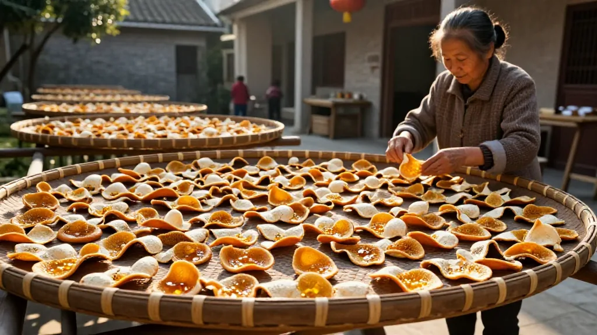
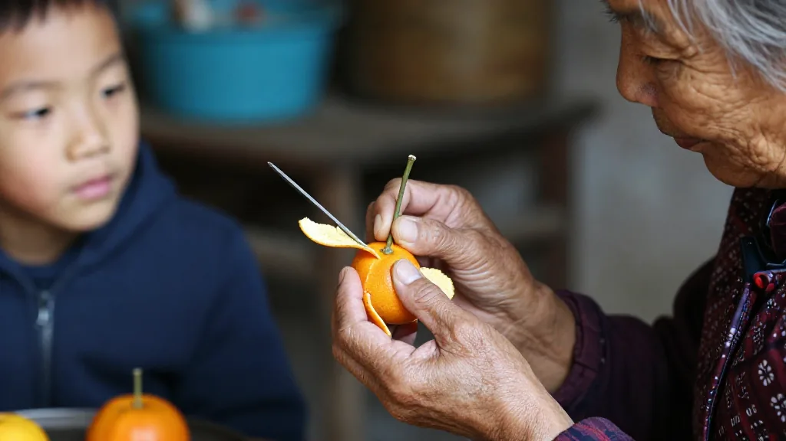
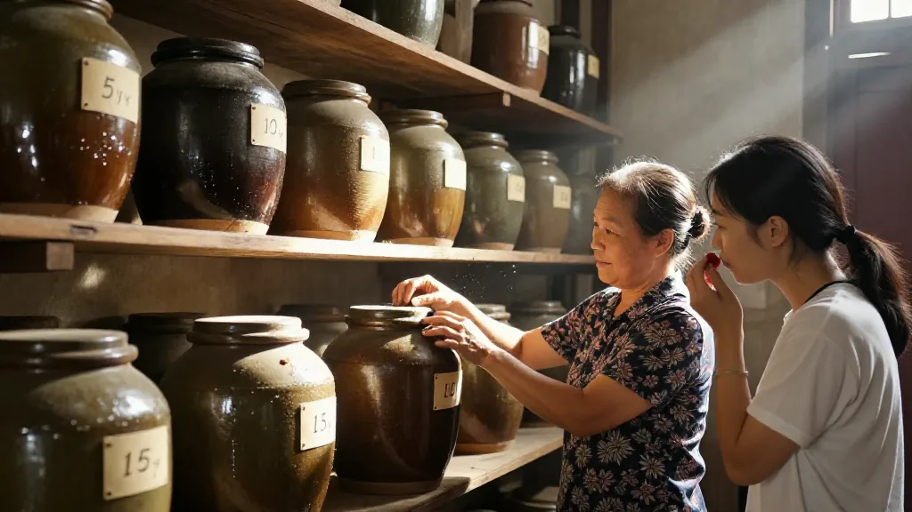
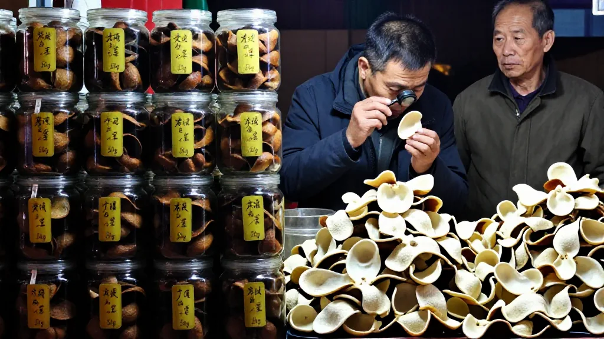
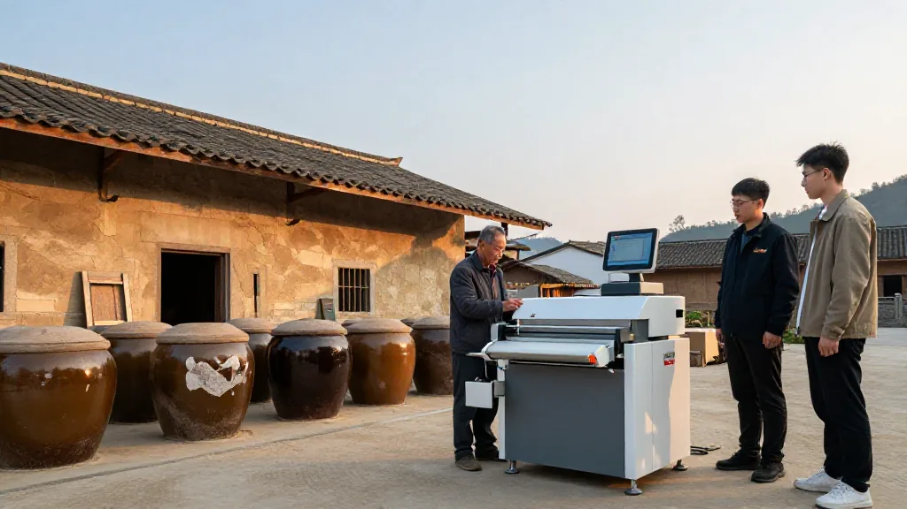

一方水土養一方皮
新會地處銀洲湖西岸，潭江與西江的匯流之處，每年汛期上游的沉積土與湖水的洪積土在此交織，形成新會特有的紅泥土質。這裡日照充足，乾濕交替明顯，溫潤與燥爽的季節輪番上陣——正是這種獨有的水土與氣候，賦予了茶枝柑果皮特殊的結構與轉化潛力。
凡能望得見新會熊子塔的地方，種出的新會大紅柑，柑皮格外芳香。這句在新會民間流傳了數百年的老話，道出了新會陳皮不可複製的地理密碼。
在中秋過後的茶坑村，銀洲湖兩岸的空氣裡還殘留著一絲桂花香與柑果的清甜。晨光透過老屋的窗欞，灑在一簍簍剛曬好的陳皮上，橙紅的果皮泛著柔和的光澤。

「中秋節前剛把當年的新皮曬完入庫，」滢滢姐站在院子裡，拿起一片五年陳皮對著光細細端詳，「你看這油室，透亮透亮的，泡出來的茶啊，回甘特別長。」
在新會的村莊裡，幾乎每家每戶都有存放陳皮的習慣。老一輩人會將當年曬好的柑皮，用紙包好放進陶罐，等它一年年慢慢轉化。茶坑村的梁阿婆說，家裡還存著爺爺那一輩留下來的老陳皮，幾十年的時光凝結在一片片捲曲的果皮裡，開罐的一刻，滿室都是醇厚的藥香。
三瓣開皮：藏在細節裡的匠心
開皮，是修煉的第一步。新會人世代遵循的「三瓣開皮法」，要求將柑皮均勻地劃成三瓣，蒂部相連，不能斷裂。這聽起來簡單，實則極考驗功力——力道過重會劃破果肉，過輕則皮肉粘連。三瓣不均的陳皮，在後續陳化中轉化不均，品相與香氣都要打上折扣。
開好的柑皮被整齊地鋪在曬場，接受秋日的陽光與微風的撫慰。反皮、翻皮、曬制，一套流程走下來，果農們要根據當天濕度與風向不斷調整翻動節奏——白天日曬，夜間回潮，讓柑皮在乾濕交替中慢慢軟化，蒸發多餘水分，讓揮發油慢慢轉化。
陳化，才是陳皮的真正生命。

火眼金睛：如何辨別一片好陳皮
市場上的陳皮魚龍混雜，從每斤數十元到數萬元不等，普通人很難分辨。業內坦言：「市面上標稱十年以上的新會陳皮，合格率不足三成。」
滢滢姐教了幾個實用的辨別方法——望、聞、嚐、刮。
望。看外形。正宗的新會陳皮呈三瓣完整開張，表皮有細膩的豬鬃紋，油室飽滿密集，在光線下透亮清晰。內囊蓬鬆，自然風化後呈古銅色澤，紋理如蜂窩。外地皮則片小碎裂，油室稀少且大小不一，顏色不均，內囊粗糙緊實。
聞。聞香氣。新會陳皮的香氣會隨年份變化——3至8年的皮帶果酸味，9至20年的清香撲鼻，20至40年漸轉甘香醇厚，50年以上則是濃郁的藥香陳韻。如果打開包裝就聞到刺鼻的硫磺味，或者寡淡無香，那極有可能是熏硫或假冒的陳皮。
嚐。嚐口感。好陳皮入口甘香醇滑，回甘明顯，泡水後可反覆沖泡十幾次仍保留風味。而年份不足或假冒的陳皮，兩三泡後味道便散盡，留下苦澀麻舌的餘味。

「陳皮是最誠實的東西，」滢滢姐說，「時間花在什麼地方，皮會告訴你。急不得，要等得起。真正的價值，從來都是時間賦予的。」
採訪接近尾聲時，她從一個老陶罐裡取出幾片陳皮遞給我。罐子很舊，釉面已經斑駁，但打開蓋子的那一刻，一股沉穩而溫暖的香氣撲面而來。「這是爺爺那輩傳下來的，已經三十多年了。1996年產業最低谷的時候，家裡人也沒捨得賣掉，一直存著。」
產業浮沉：從「土特產」到「百億產業」
1996年，是新會柑產業的最低谷。種植面積跌至僅剩六七百畝，很多老柑農無奈轉行另謀生路。轉機出現在2000年代以後，地理標誌產品認證、行業協會成立、電商渠道打通、直播帶貨興起，一系列因素疊加推動新會陳皮從谷底反彈，扶搖直上。
到2025年，新會柑種植面積已達14.75萬畝，全產業鏈總產值突破283億元，帶動超10萬人增收。新會陳皮連續三年位居中國區域農業產業品牌影響力指數榜首，成為廣東「百千萬工程」的標桿樣本。
然而，產業快速擴張的背後，問題與挑戰同樣不容回避。年份虛標、產地冒充、監管缺失等亂象在市場上屢見不鮮。2026年以來，江門市市場監管局聯合新會區政府開展地理標誌保護專項行動，截至七月已檢查經營主體超過兩萬家，立案查處違法案件311宗，罰沒金額超過374萬元。

老字號的破圈之路
新會陳皮的傳承，不僅在鄉間的曬場上，也在老字號的創新探索中。
創立於光緒三十四年的新寶堂，是新會陳皮行業的老字號，也是國家級非遺代表性傳承人單位。2026年，這家百年老字號做出了一系列讓外界矚目的新動作：獨家冠名粵超江門賽區，將陳皮文化與體育精神嫁接；出品穿越題材短劇《陳皮密碼》，讓年輕觀眾通過劇情讀懂非遺；更投資三億元，打造「陳皮國家級非遺文旅體驗基地」，將體育、影視、文旅三大板塊全面融合。

「體育讓陳皮動起來，影視讓它活起來，文旅讓它立起來。」陳董說。老字號的「潮」，不在於追趕潮流，而在於敢擁抱新的表達方式，讓陳皮文化走進年輕人的日常。
如果你也想系統瞭解陳皮從選果到陳化的全流程，加滢滢微信，天馬村、茶坑村、梅江村核心產區任你選。每天早上 7 點到中午，來滢滢直播間看看真正的曬皮場；想學鑑別，看看老皮時光裡的母女對話。留言告訴滢滢：你覺得陳皮最大的價值是什麼？